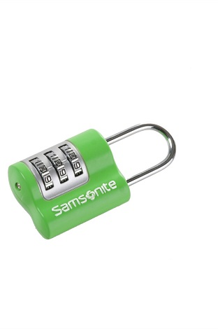

Het klassieke slot. Wie kent het niet. Vaak te zien in klassieke tienerfilms, hangend aan een kluisjes.
Maar hoe zit het met het slot vanuit het oogpunt van usability. Tijdens het gebruiken moet je natuurlijk waar je bent gebleven. Dit moet bij dit slot uit het hoofd gedaan worden. Het concept hieronder zou wat makkelijker in gebruik zijn, wat dat betreft
Het is vrij gemakkelijk om het te leren gebruiken, dus qua learnabilty en memorability zit het wel goed. Het slot dient een doel. Je hoeft geen knoppen in te drukken, je kunt het slot in een continue beweging gebruiken.
Als we gaan kijken naar de errors, zien we dat een error snel gemaakt is. Want je krijgt niet veel feedback van het slot. Het groene slotje hierboven doet dat veel beter. En als je een fout maakt, kun je dus opnieuw beginnen, iets wat bij het groene slotje niet het geval is.
Qua satisfaction zit het vrij goed. Het slot is een continue beweging te gebruiken en is makkelijk te leren gebruiken. Wel geeft het slot geen feedback tijdens het gebruik.